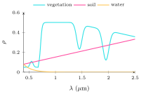

; different materials have different shapes — vegetation low in the red and high in the NIR, water dark beyond the visible, soil rising slowly — but each class is a random family of curves, so discrimination is statistical.
; different materials have different shapes — vegetation low in the red and high in the NIR, water dark beyond the visible, soil rising slowly — but each class is a random family of curves, so discrimination is statistical.Definition
as a function of depends on the composition, structure and geometry of the surface. Typical shapes:
- green vegetation: chlorophyll absorbs blue and red, small green peak (~0.55 µm), steep rise (red edge, ~0.7 µm) to a high NIR plateau due to leaf cell structure, dips at the water absorption bands 1.4 and 1.9 µm;
- water: low in the visible, almost zero in NIR and SWIR;
- bare soil: increases slowly with , lower with moisture and organic matter;
- snow: very high in the visible, dropping in the SWIR (snow and cloud separable there).
Picture

Variability
A given land cover shows many realisations: static factors (slope, exposure) and dynamic ones (soil moisture, growth stage, atmospheric transmittance) change the curve. The signature of a class is therefore a random process, and recognition must model its statistics (feature space, Bayes).
Worked example
Reflectances: grass red 0.05, NIR 0.45; soil red 0.20, NIR 0.28; water red 0.04, NIR 0.01. NDVI : grass 0.80, soil 0.17, water −0.60. The red band alone barely separates grass from water (0.05 vs 0.04); the NIR band or the index separates all three.
Intuition
Materials have colours beyond the visible; the infrared "colour" of vegetation is its brightest feature.
Pitfall
A multispectral sensor samples the signature in a few broad bands: two materials with different fine signatures can give identical band values. Hyperspectral sensors reduce this ambiguity.